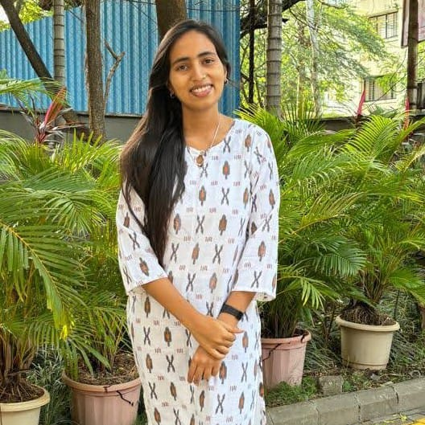
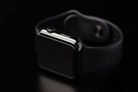
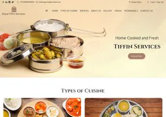
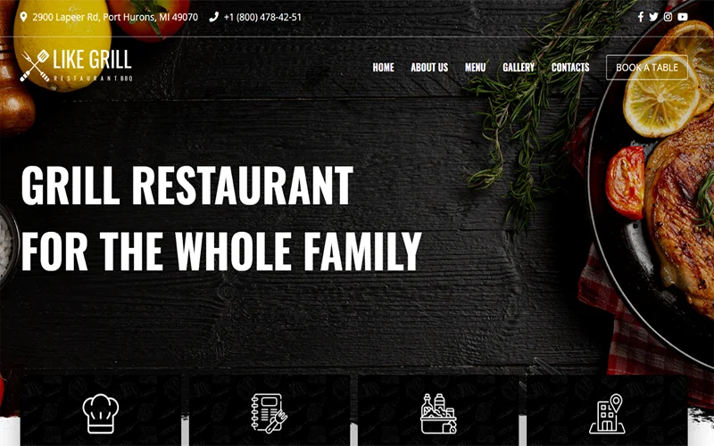
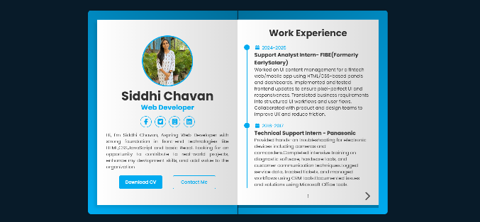

I enjoy turning ideas into clean, responsive, and user-friendly websites. I work with HTML, CSS,JavaScript, and modern frameworks to create smooth user experience.

I am an aspiring Frontend Developer with a strong intrest in building responsive and user-friendly web applications.I have hands-on experience with HTML. CSS and javaScript, and I am continously improving my skills.I enjy turning Creative Ideas into Functional websites and focus on writing clean, efficient code.I am graduate in B.E electronic and also have completed PG-DMC (Diploma in Mobile Computing )where gain experience on different technologies.
Read MoreI genuinely enjoy working with UI/UX design because it allows me to think beyond just coding and focus on how user actually intearct with aproduct. I like understanding user behaviour, identifying pain points, and designing solutions that make interfaces simpe an intutive. I also enjoy the balance between creativity and logic in UI/UX . It challenges ,e to think both as a designer and a devloper. Overall, I find it fullfilling to build experience that are visually appealing, easy to use, and meaningful for users.
I enjoy frontend development because it allows me to bring ideas to life in a way user can actually ee and interact with . i find it exciting to take a design and transform ot into a fully functional, reponsive interface using HTML,CSS and JavaScript.Frontend devlopment gives me the perfect balance of creativity and logic. I get to focus on design details like layout, color, and typography while also writing clean, efficient code. With my knowledge of UI/UX design, I try to ensure that the interfaces I build are not only visually appealing but also intutive and user-friendly.
I enjoy database management because it allows me to work with the backbone of any applications- data. I find it intresting to design struvtured database that store information efficiently and ensure it can be retrived quickly and accurately. What I enjoy most is organixing data logically, creating tables, defining relationships, and writing optimized tables, definig relationships, and writing ptimized queries. It gives me a sense of satisfaction when I can improve performance by structuring data properly or optimizing queries for faster result.

Mirocontrolled-based Industrial Emergency Alert Band that allows employees to send instant alerts during emergencies. The system triggers alarms and voice announcement to guide evacuation, ensuring quick response and improved workplace saftey.

A Tiffin Management System is a software soltion designed to manage and streamline the operations pf a tiffin (meal delivery) service. The system helps in handling customer orders, subscription plans , meal scheduling, and delivering tracking efficiently.

Developed a responsive restuarant website Named Grilli, focused on delicering a smealess and engaging user esperience.The site showcase the menu, services, and key details with a clean, user-friendly interface and smooth navigation.I implemented interactive elements like hover effects and responsive layouts.

Developed a responsive protfolio website to showcase my projects, technical skills, and experience in forntend develeopment. The website features a clean and modern UI with section like About Me, Projects, Skills, and Contact. I focuse on creating a smooth user experience by implementing responsive design, intutive navigation,and interactive elemets such as hover effects and smooth scrollig.